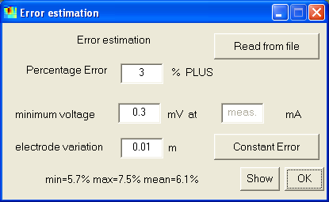
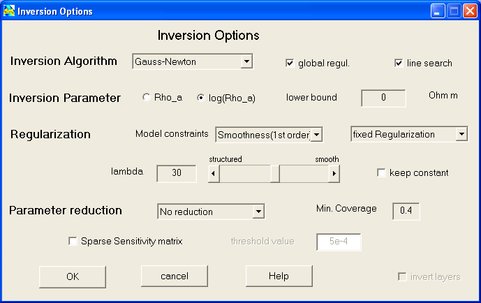
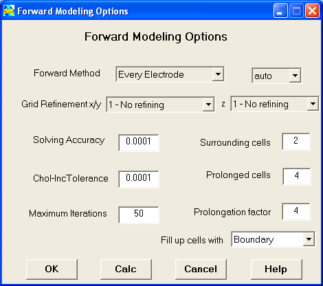
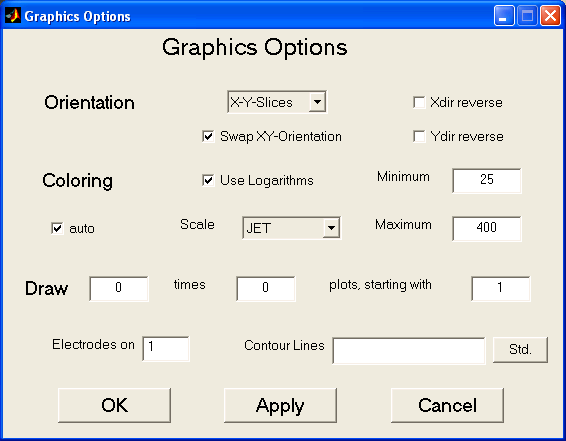

| Start Page | Menu Items | Interactive Features | Hotkeys | Tutorial |
|
Knowing the accuracy of the data points can significantly increase the interpretation
of geophysical data. If errors (in terms of standard deviations) are not measured,
it is possible to estimate. The (relative) data erros are supposed to consist
of two parts, one percentage error plus an voltage error considering the limited
accuracy of the field equipment. The voltage error is divided by the driving
current and multiplied with the configuration factor giving large errors for
high k-values (such as dipole-dipole) and small errors for low k-values (such
as wenner). |
 |
In the inversion options dialog defines the setup for treating the inverse problem.

Inversion Algorithm
Inversion Parameter
Regularization
Parameter Reduction
A reduction of the number of free parameters can decrease computation time and improve the results. This can be done by deleting bad covered data (under minimum coverage) or by combining cells in greater depths (default) or by both methods.
This dialog defines, how the model and data sections are plotted.

Coloring can be done automatical or manually by giving minimum and maximum
value. Several color maps can be chosen. The user can decide, whether to draw
electrodes or not. The x-axis may be reversed. As default option the logarithms
of resistivity are plotted.
The default way to plot model cells is with colored boxes (because it shows
how the model really looks like), but filled contour lines or smoothed image
are also possible.